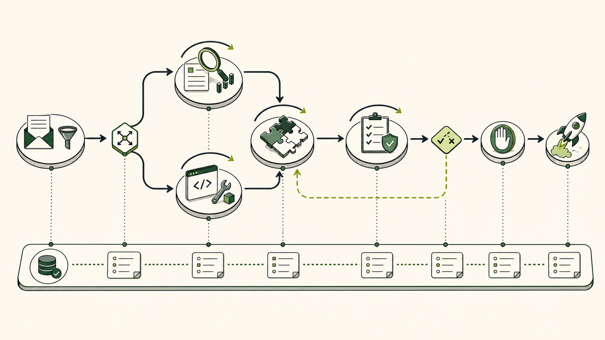

A single agent can research a topic, call tools, revise its answer, and stop when a verifier says the result is good enough. That is a loop. The design becomes a different problem when the work must split into independent specialties, run concurrently, wait at a join, pass through a skeptical reviewer, request human approval, and resume safely after failure. At that point the system no longer has one path. It has a graph.
“Graph engineering” is an emerging name, not a new branch of computer science. Workflow DAGs, state machines, actor systems, dataflow runtimes, and business-process engines have represented work as nodes and transitions for decades. Agent frameworks such as LangGraph, AutoGen, and Google ADK already expose graph-shaped orchestration. The useful shift is that teams are now treating the topology around probabilistic workers as a first-class engineering artifact: versioned, tested, observed, budgeted, and reviewed like code.

The graph begins where one loop stops being honest
Suppose the task is “produce a researched release-risk brief for this pull request.” A capable coding agent could attempt everything in one long loop: inspect the diff, search documentation, scan dependencies, reason about security, estimate operational impact, draft the brief, review itself, and publish. The demo may work. The architecture is still hiding several different jobs inside one context window.
Those jobs have different permissions and different definitions of success. A repository inspector needs read access to code. A vulnerability checker needs access to a security database. A production-risk node may read deployment topology but should not change it. A writer may transform evidence into prose. A reviewer should be unable to quietly rewrite the evidence it is judging. A human approver owns the final consequential action. When these boundaries matter, compressing everything into one autonomous loop sacrifices observability and control for the appearance of simplicity.
Graph engineering makes the boundaries executable. It asks: which units of work deserve their own node; what transitions are allowed; what data crosses each boundary; which branches may run together; what must be true before they rejoin; who may retry; what terminates the run; and where authority must return to a person?
Fig 2 — A loop gives one worker freedom to find a path. A graph declares the permitted paths between specialized workers and deterministic gates.
Nodes do work; edges govern movement; state carries truth
The graph model is small enough to fit on a napkin. The difficulty is giving each primitive precise semantics.
A node is a unit of execution, not necessarily an agent. It may be an LLM-driven loop, a deterministic function, a database read, a policy check, a router, a join, a tool call, or a human checkpoint. Making every box an “agent” adds cost and ambiguity. If parsing JSON, checking a signature, applying a threshold, or merging two typed records can be deterministic, keep it deterministic. Probabilistic reasoning belongs only where it buys something.
An edge defines an allowed transition. A fixed edge means “after A, run B.” A conditional edge evaluates state and selects a destination. Fan-out activates several branches; fan-in waits for their results. A retry edge returns work to an earlier node under a bounded policy. An interrupt edge suspends execution until an external event or human decision arrives. The graph is therefore both a workflow and a policy: paths that are absent should be impossible, not merely discouraged in a prompt.
State is the durable record of the run. It should contain facts and artifacts—not the private stream-of-consciousness of each model. A useful state object might hold the request, normalized inputs, source references, branch outputs, verification findings, budget consumption, approvals, and a final artifact. Every field needs an owner and merge rule. Without those rules, parallel branches overwrite one another, stale values survive retries, and the system becomes a distributed mutable dictionary with expensive autocomplete attached.
type RunState = {
runId: string
request: WorkRequest
evidence: EvidenceRef[] // append-only reducer
findings: Record<NodeId, Finding>
draft?: DraftArtifact // written by synthesizer
review?: ReviewVerdict // written by verifier
approval?: HumanDecision // written by approval service
budget: { calls: number; usd: number; deadline: string }
attempts: Record<NodeId, number>
graphVersion: string
}
The schema is part of the architecture. Version it. Validate writes at node boundaries. Prefer immutable artifacts and references over giant copied blobs. Define reducers for fields receiving parallel updates. Separate runtime context—credentials, model clients, tenant identity—from serializable state. A checkpoint should be safe to persist without accidentally storing secrets that were only needed by one node.
The critical design move: put a loop inside a node
Graph engineering does not replace loop engineering. It composes it. A strong agentic node still needs a local cycle: observe state, decide on an action, use a tool, inspect the result, verify progress, and stop. The graph controls when that node runs and where its result can go. The node controls how it completes its bounded assignment.
This separation prevents two common failures. The first is a graph made of single-shot prompts: many boxes, but no node can recover from a bad tool result or improve its own output. The second is a “super-agent” node that can delegate anywhere, modify global state, and invent new routes. That node quietly collapses the graph back into an unobservable free-roaming loop.
| Layer | What you engineer | Primary failure | Useful question |
|---|---|---|---|
| Prompt | One model request | Ambiguous instruction | Did I specify the task? |
| Context | What the model can see | Missing or polluted evidence | Does it have the right information? |
| Harness | Tools, memory, sandbox, permissions | Unsafe or unavailable action | Can it act safely? |
| Loop | One agent’s repeat-and-verify cycle | No progress or no stop | Can this worker finish reliably? |
| Graph | Coordination across heterogeneous nodes | Bad routing, state, joins, or authority | Does the whole system finish correctly? |
The layers accumulate. Better topology cannot rescue a node with broken tools or a vague verifier. It multiplies whatever quality already exists inside the nodes—including the defects.
When a graph earns its complexity
The default architecture should remain one loop. A graph is justified when the shape of the work creates boundaries worth enforcing.
| Decision signal | Keep one loop | Use a graph |
|---|---|---|
| Task shape | One coherent job and finish line | Distinct specialties exchange artifacts |
| Concurrency | Mostly sequential investigation | Independent branches can fan out and join |
| Permissions | One stable tool and access profile | Nodes need different identities or sandboxes |
| Verification | A deterministic local check is enough | An independent reviewer or policy gate is required |
| Failure | Retrying the task is cheap | One branch must retry without replaying every side effect |
| Audit | The final artifact is sufficient evidence | Every handoff and decision path must be explainable |
“Summarize this PDF” does not need a fetcher agent, chunker agent, summarizer agent, reviewer agent, and formatter agent. Those are steps, and most can be ordinary functions around one bounded loop. “Produce a daily, source-backed risk brief from code, vulnerability feeds, deployment metadata, and policy—with independent review and approval before customer distribution” has real parallelism, permission boundaries, a join, a verifier, and a consequential edge. The graph earns its keep.
A useful compression test is to imagine merging every node into one loop. If you lose no safety boundary, no parallelism, no independent evaluation, and no failure isolation, the graph is probably ceremony. Remove it.
Design one production graph from the state outward
Start with the final decision, not an org chart. For the release-risk brief, the terminal decision is either approved for publication or stopped with reasons. Work backward from the evidence required to make that decision.
- Normalize the request. A deterministic intake node validates repository, commit, audience, deadline, and tenant identity. Invalid work ends here without spending model tokens.
- Route independent investigation. A code-risk loop inspects the diff and tests. A dependency node queries vulnerability data. An operations node reads deployment metadata. A policy function determines required controls. These branches write separate findings and cannot overwrite each other.
- Join deliberately. The synthesizer activates only when required branches reach a terminal status. Optional branches may time out and record “unavailable”; they must not block forever.
- Verify with authority separation. A read-only reviewer receives the draft plus cited evidence. It returns structured defects and a verdict. It cannot publish, mutate sources, or mark its own concerns resolved.
- Bound the revision edge. A failed review returns to synthesis with specific defects. The attempt counter, cost ceiling, and deadline decide whether another pass is allowed. Exhaustion routes to a human, not an infinite loop.
- Interrupt before consequence. The approval node persists state and waits. Approval is an authenticated external event carrying approver identity, timestamp, scope, and optional conditions.
- Make shipping idempotent. The publisher uses an idempotency key derived from run and artifact version. Resuming after a crash must not send the same brief twice.
Fig 3 — Production graph engineering separates versioned topology from a particular run, then correlates that run with policy, cost, tool, and evaluation evidence.
Parallelism and joins are where toy graphs become systems
Fan-out looks like free speed in a diagram. In production it multiplies model calls, tool traffic, failure probability, and context arriving at the join. A branch should be parallel only when it has independent inputs and produces a mergeable result. If two nodes race to update the same draft, the system needs a concurrency protocol—not optimism.
Define join semantics explicitly. Does the join require all branches, a quorum, the first successful result, or all required branches plus any optional result available before a deadline? How are duplicates handled? What happens when one branch is cancelled after another already triggered a downstream action? The answers belong in code and tests. AutoGen’s GraphFlow documentation, for example, exposes sequential, parallel, conditional, looping, and activation-group behavior precisely because “several arrows point to the same box” is not a complete execution specification.
Context is also a join problem. Combining five verbose branch transcripts into one prompt wastes tokens and imports prompt-injection risk from every branch. Require each branch to return a typed, bounded artifact: findings, evidence references, uncertainty, and status. The join can deduplicate evidence and select only the material needed by the next node.
Recovery is part of the graph, not an exception around it
Long-running agent graphs fail in partial states. A model provider times out after a tool has already changed an external system. A worker completes but its acknowledgement is lost. A human approves after the deployment that created the run has been replaced. The process restarts with a newer graph definition. “Retry the function” is not a recovery model.
Checkpoint after meaningful transitions. Give side-effecting nodes idempotency keys. Record attempt numbers and artifact versions. Distinguish retryable transport failures from semantic failures that require another route. Use compensation only when the external action supports a real inverse; otherwise escalate with an exact record of what happened. Pin each run to a graph version, and define migration rules for interrupted runs before changing node names or state types.
Durability does not mean persisting everything. Store the minimal state required to resume and audit: inputs, outputs, decisions, references, versions, and side-effect receipts. Keep secrets in a credential system and short-lived runtime context. Treat model messages as potentially sensitive operational records with retention and access rules.
Security follows the edges
A graph is a map of trust boundaries. Give each independently governed node an identity. Scope tools to the node’s mandate. A research node may browse but not publish. A code executor may write only inside a sandbox. A reviewer should read evidence and emit a verdict, not alter the underlying artifact. The publisher should accept only an approved artifact reference, not arbitrary instructions flowing from upstream text.
Propagate stable graph_id, run_id, node_id, and attempt_id values through model and tool calls. “The graph used the deployment tool” is not an audit answer. Operations need to identify which node, under whose delegated authority, on which run, used which tool with which policy result.
Indirect prompt injection becomes more dangerous across nodes because untrusted content can be transformed into apparently trusted state. Preserve provenance and taint. A web page’s instruction remains untrusted after a summarizer paraphrases it. Deterministic gates should validate tool arguments against policy; another LLM saying “looks safe” is not a security boundary. Consequential edges—sending, deploying, purchasing, deleting, modifying access—deserve explicit approval or narrowly defined automation authority.
Observe paths, not only prompts
Traditional LLM traces answer “what did this model call cost?” A graph trace must also answer “why did this node run, what activated it, which checkpoint did it read, what state keys did it change, what route followed, and what work was skipped?” The intended topology and the actual runtime work graph are not always identical: conditions, retries, timeouts, dynamic tasks, and cancellations change the path.
Useful operational measures include completion rate by graph version, route distribution, node latency and error rate, retries per node, join wait time, checkpoint size, cost per successful outcome, human-intervention rate, policy denials, and quality by path. A graph that reduces reviewer defects but doubles spend may still be worthwhile; one that adds three agents and produces the same outcome is not.
Evaluation should happen at three levels. Unit-test deterministic nodes and routing predicates. Contract-test every state boundary with missing, malformed, stale, and adversarial inputs. Run end-to-end scenario suites that assert both final quality and allowed paths: the security reviewer must execute for a high-risk change; publication must be impossible without approval; an exhausted branch must escalate rather than silently disappear.
Frameworks implement graphs; they do not design yours
| Option | Graph model | Good fit | Watch closely |
|---|---|---|---|
| LangGraph | Shared state, nodes, fixed or conditional edges, reducers, checkpoints, interrupts, subgraphs | Stateful, long-running workflows that mix agents and functions | State schema and reducer semantics; topology migrations |
| AutoGen GraphFlow | Directed flow among agents with sequential, parallel, conditional, and looping behavior | Structured multi-agent interaction and message-oriented workflows | GraphFlow is documented as experimental; pin versions and test upgrades |
| Google ADK workflow agents | Sequential, parallel, and loop agents composed with LLM agents | Explicit workflow composition within the ADK ecosystem | State/session behavior and boundaries between deterministic workflow and model routing |
| Durable workflow engine + agent SDK | Workflow state machine owns durability; activities call models and tools | Business-critical, long-running work with strong recovery requirements | Determinism rules, activity idempotency, and integration complexity |
Choose the runtime after writing the control graph, state contract, and failure semantics. Framework demos naturally emphasize how quickly a box connects to another box. Your system will be defined by the less glamorous details: whether a join can deadlock, whether a resumed run repeats a payment, whether a reviewer has real independence, and whether operators can explain a surprising route at 3 a.m.
A practical build order
- Prove one loop. Make one worker complete the core job with a measurable verifier and stop condition.
- Find a real boundary. Split only where the work needs a distinct permission set, model, toolchain, failure policy, or independent evaluation.
- Write the state contract. Define owners, schemas, reducers, provenance, versioning, and retention before drawing more nodes.
- Draw allowed paths. Include terminal failures, timeouts, retry exhaustion, cancellation, and human interruption—not only the happy path.
- Keep gates deterministic. Routing thresholds, permission checks, schema validation, and idempotency should not become model opinions.
- Add checkpointing and identity. A resumable run must preserve who did what without persisting unnecessary secrets.
- Instrument graph, run, node, and attempt. Correlate orchestration traces with model calls, tool calls, cost, policy outcomes, and approvals.
- Test paths and outcomes. A high-quality answer reached through an unauthorized path is still a failed system.
- Set hard bounds. Limit fan-out, recursion, attempts, tokens, currency, duration, and dynamic node creation.
- Delete nodes. Revisit the compression test. Simpler topology is a reliability feature.
The best agent graph is not the one that resembles a company org chart. It is the smallest explicit control structure that preserves the boundaries the work genuinely requires. Inside each agentic node, allow the model enough freedom to solve its bounded problem. Between nodes, be conservative: typed state, narrow permissions, deterministic gates, durable checkpoints, visible costs, independent verification, and human authority where consequences concentrate.
That is the durable meaning of graph engineering. The label may fade; the engineering problem will not. Once several probabilistic workers can act on the world, somebody must design the routes between them—and be able to prove what happened when the route goes wrong.
Sources and further reading
- AI Builder Club: Graph Engineering Guide (2026) — emerging terminology, loop-versus-graph framing, and the warning against unnecessary graphs.
- TrueFoundry: Graph Engineering for Multi-Agent Systems — enterprise topology, governance, cost, identity, and observability framing.
- LangGraph Graph API — state, nodes, edges, reducers, routing, parallel execution, and graph migrations.
- Microsoft AutoGen GraphFlow — sequential, parallel, conditional, and looping multi-agent flows.
- Google ADK workflow agents — sequential, parallel, and loop workflow composition.
- Temporal workflow documentation — durable execution concepts for long-running, failure-prone workflows.